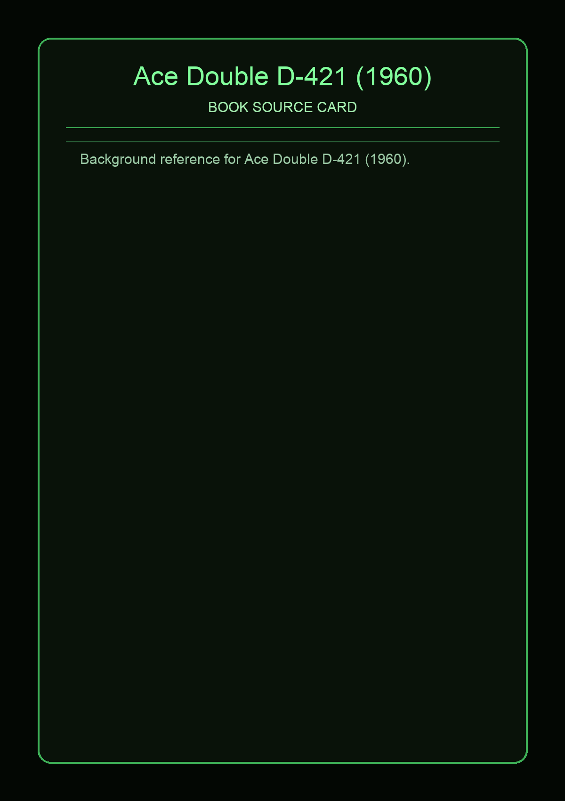

Ace Double D-421 (1960)
Source Card

A-side: Dr. Futurity (Philip K. Dick). B-side: Slavers of Space (John Brunner). This Ace code uses the dos-a-dos format, so each narrative gets its own front-cover orientation in one physical paperback [1][2].
D-421 pairs PKD time-travel ethics with Brunner's slavery-and-android storyline. Dr. Futurity follows Dr. Jim Parsons, displaced to 2405, where he becomes entangled with Corith, Loris, and competing agendas about historical intervention [3].
Covers and Context


The reverse title, Slavers of Space, was later revised as Into the Slave Nebula, centered on Derry Horn's investigation of an android killing that opens onto interstellar slave systems. Together they frame D-421 as a high-pressure political SF double [4].
External Links
Facts are synthesized in original wording from direct references listed above.